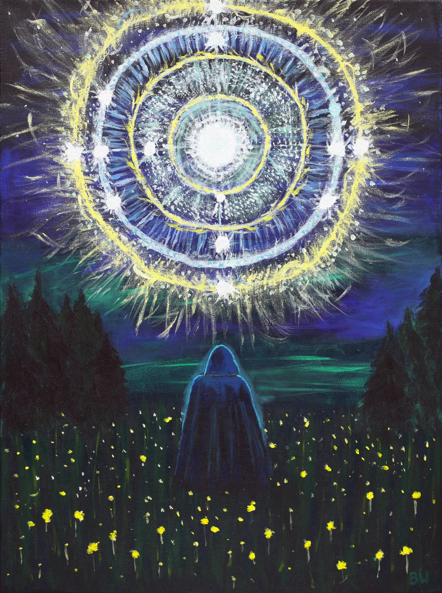
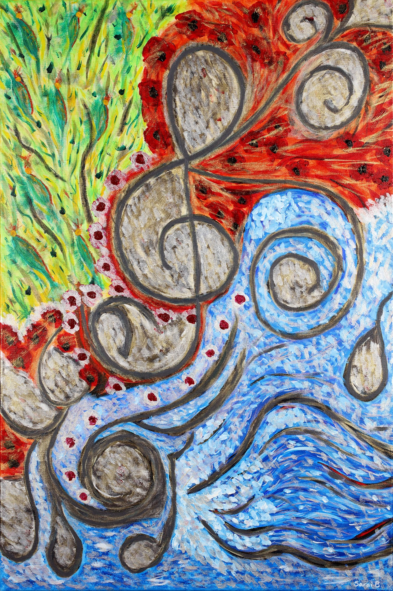
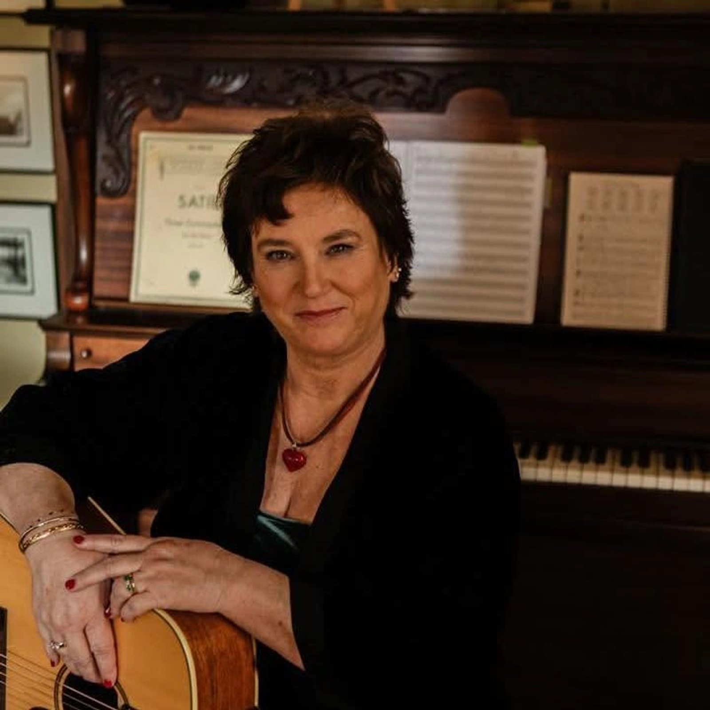
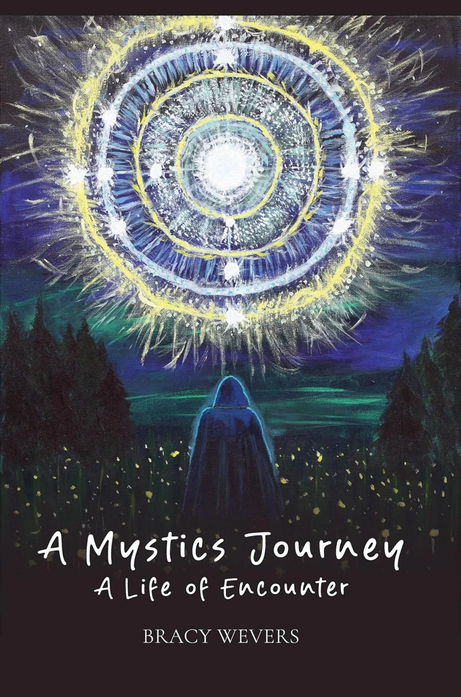
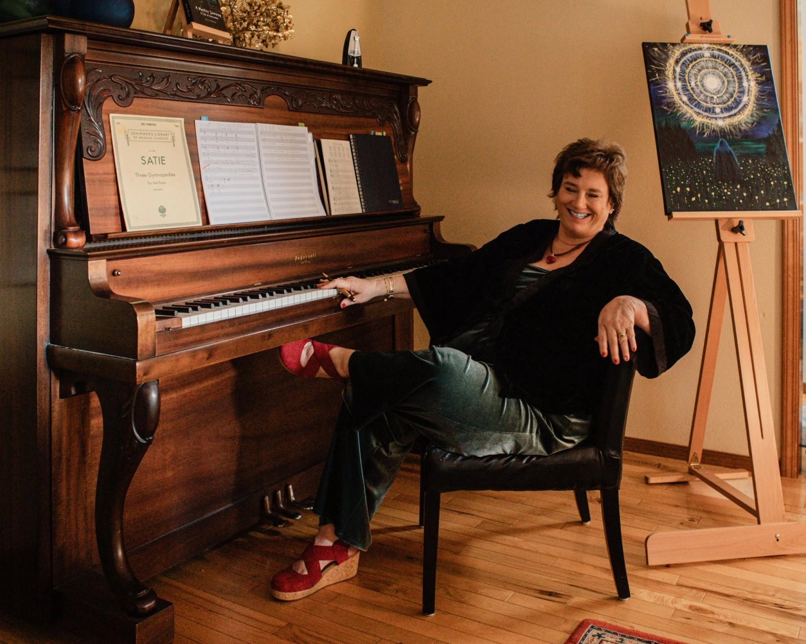

{kind=link}

An afternoon of art, music & inspiration.View event details →
The heart behind the art
The Obsession with Color
The desire to paint has become an obsession.
It all began in November 2024, when SaraiB took her first art class and discovered an unexpected fascination with color — and, even more so, with the magic of mixing them.

Inspired creations
Gallery Galaxy
{kind=link}
{kind=link}
{kind=link}
{kind=link}
{kind=link}

The heart behind the art
The Obsession with Color
The desire to paint has become an obsession.
It all began in November 2024, when SaraiB took her first art class and discovered an unexpected fascination with color - and, even more so, with the magic of mixing them. What began as a curiosity quickly blossomed into a true passion.
Today, color fills her thoughts, her imagination, and even her dreams. She often dreams in color, waking with vivid images and combinations of hues still alive in her mind. Sometimes, she will reach for a brush and try to recreate on canvas what was revealed to her in her dreams.
Painting has become more than something she does. It has become a way of seeing, feeling, and translating the world around - and within - her. She is obsessed with color, endlessly curious about what happens when one color meets another, and captivated by the endless possibilities that can emerge from the canvas. Every piece begins with a moment of inspiration - a quiet whisper, a stirring of the soul, a desire to place color on canvas, and bring something from within into the world.
Through painting, music and storytelling, SaraiB shares a creative journey that touches the heart, creates hope and invites you into deeper connection. Each creation is an expression of her heart, her imagination and the belief that art has the power to move us, awaken something within us and impact our lives.
For SaraiB, creating is more than making art - it is a way of connecting, expressing and sharing the beauty of what lives within.
More inspired creations
{kind=link}
{kind=link}
{kind=link}
The story behind the journey
A Mystic’s Journey: A Life of Encounter
Explore the book ↗When someone you care about invites you into the story of their spiritual journey, you’re not just reading words on a page - you’re walking beside them through moments of transformation, doubt, clarity, and grace.That’s what this book offers: not a map, but a lantern. It lights the way not with answers, but with honest reflections, personal revelations, and the quiet strength that comes from walking an authentic path.
I’ve had the privilege of knowing Bracy (SaraiB) Wevers not just as a friend, but as a fellow seeker. Over the years, I've watched her wrestle with the big questions - Who am I? Why am I here? Where is the Divine in all of this? - with humility, courage, and a depth of heart that is rare and beautiful. What you’ll find in these pages is a testament to that journey.
This is not a book of spiritual cliches or quick fixes. It’s a deeply human account of awakening - told with honesty, vulnerability, and at times, breathtaking insight. Whether you are on your own spiritual path, feeling lost, or simply curious, this book meets you where you are and gently invites you to further reflect on your spiritual journey.
Jenny Pizot, friend and fellow seeker


Sacred Sound
Where spirit, story, and music become one.
Through music, SaraiB gives voice to the moments of inspiration, encounter, and divine mystery that have shaped her journey.
Listen & wonder“And let the beauty and delightfulness and favor of the Lord our God be upon us; confirm and establish the work of our hands, confirm and establish it.”Psalm 90:17 · Amplified Bible
Get in touch
Connect with SaraiB about her art, music, or an upcoming event.
Email SaraiB
saraibcreative@gmail.com